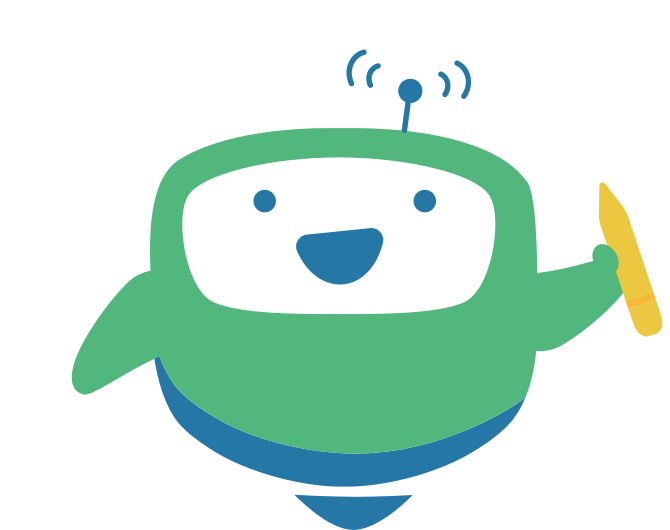
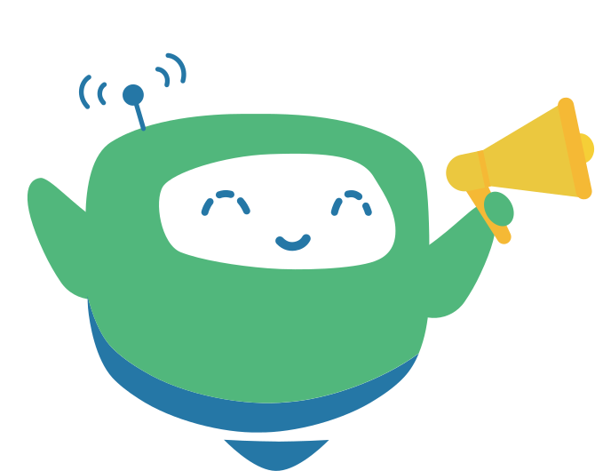

<div class="modal" tabindex="-1" id="BOTselect">
  <div class="modal-dialog modal-xl modal-dialog-centered">
    <div class="modal-content">
      <div class="modal-header">
        <h5 class="modal-title">請選擇聊天模式<small class="text-success ms-1">LEARNING MODE</small></h5>
        <button type="button" class="btn-close" data-bs-dismiss="modal" aria-label="Close"></button>
      </div>
      <div class="modal-body">
        <div class="row justify-content-around">
          <div class="col-10 col-lg-5">
            <a class="BOT-select-writing" href="https://ky077.github.io/DHE/TEEMI-robot-w/index.html">
							<div class="BOT-img"></div>
							<div>寫作練習</div></a>
          </div>
          <div class="col-10 col-lg-5">
            <a class="BOT-select-speaking" href="https://ky077.github.io/DHE/TEEMI-robot/index.html">
							<div class="BOT-img"></div>
							<div>口說練習</div></a>
          </div>
        </div>
      </div>
    </div>
  </div>
</div>
